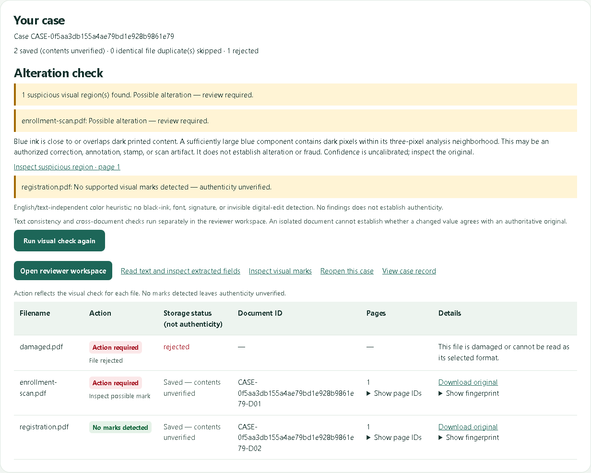
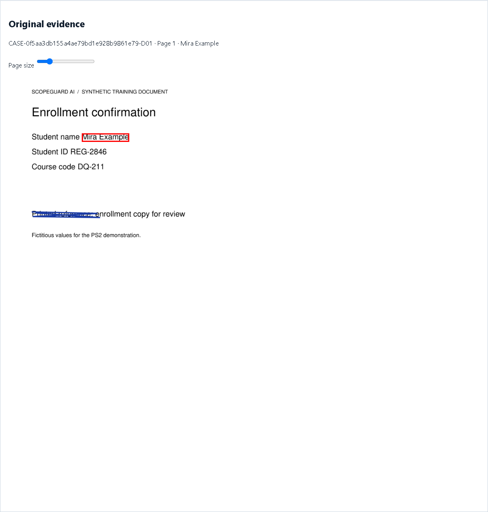
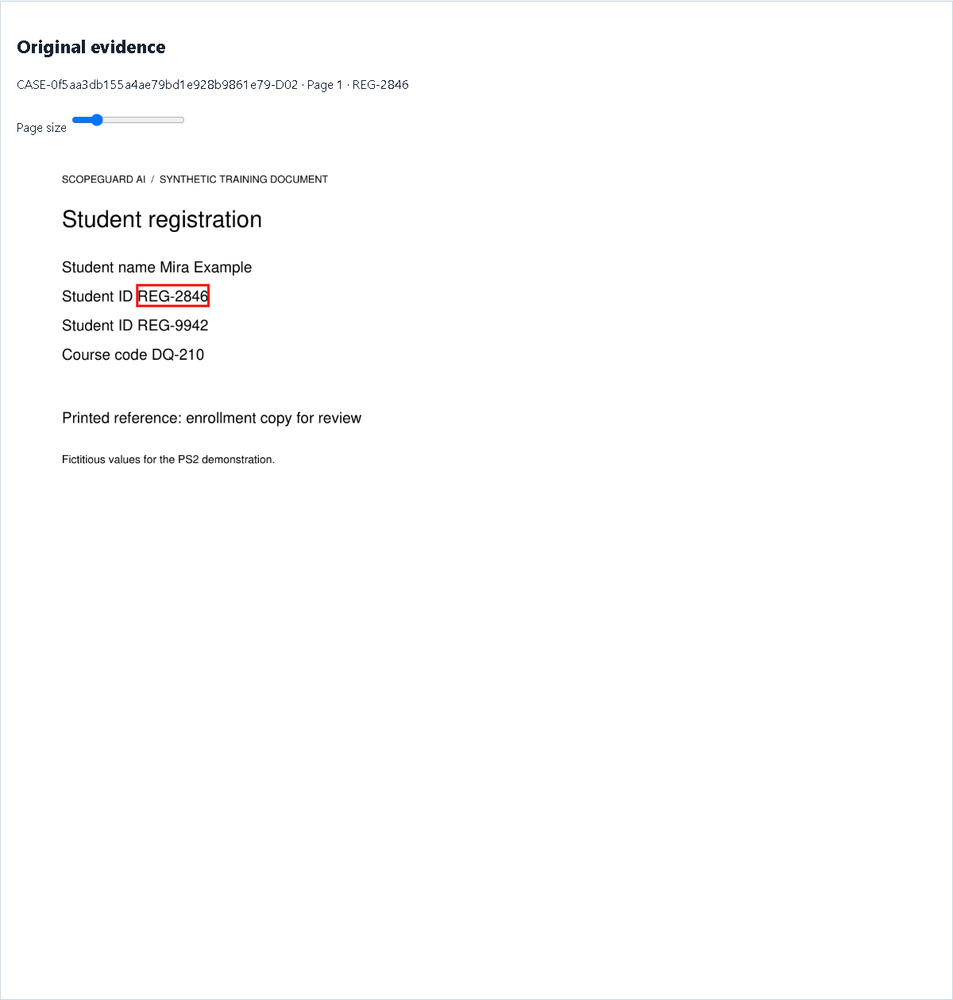
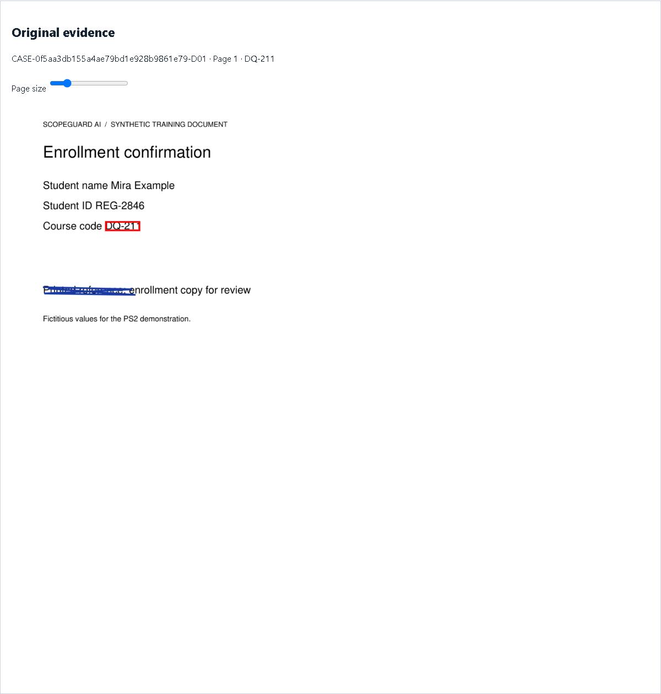
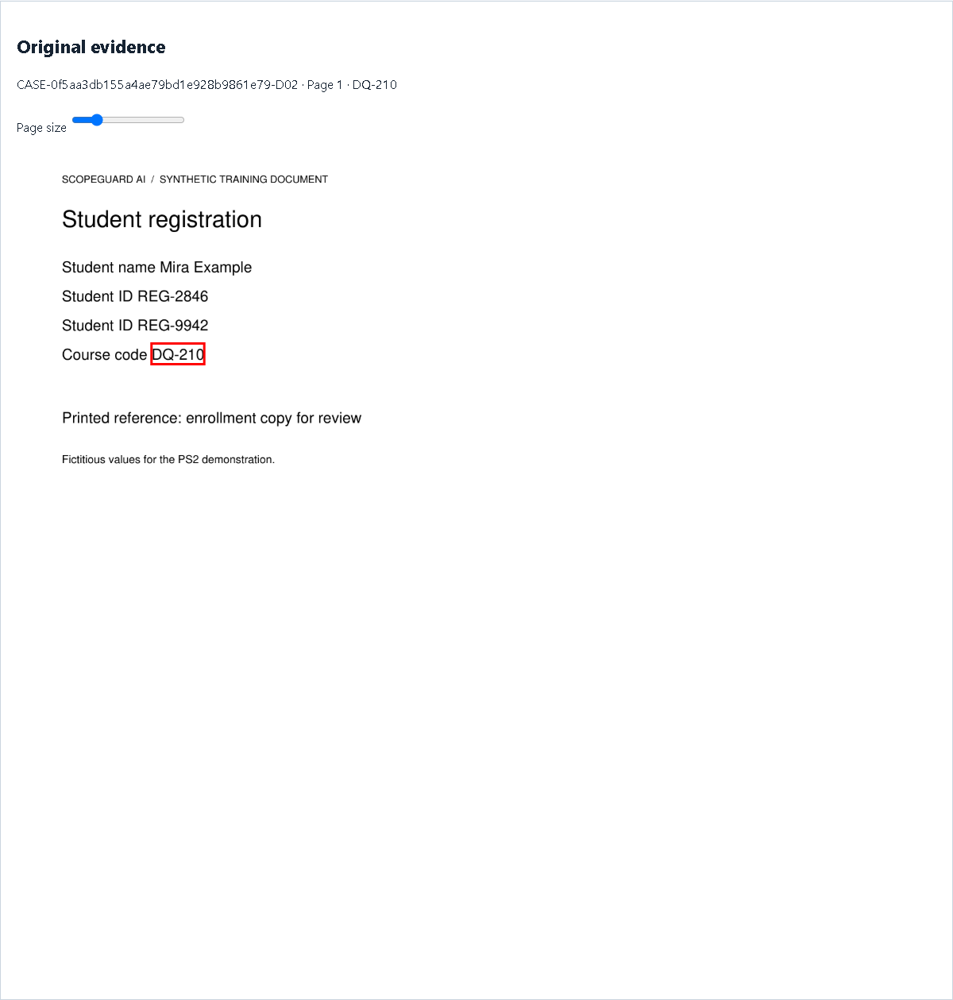
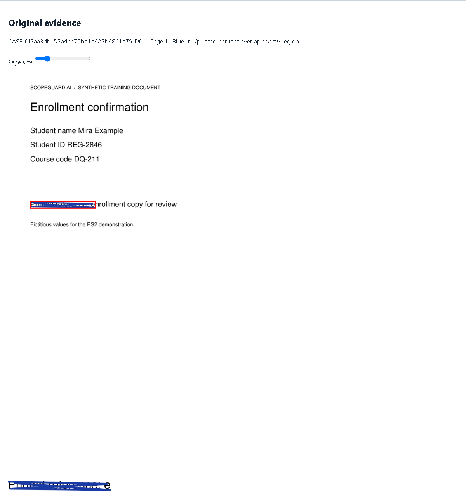

Upload and safe failure

Two documents saved, damaged PDF rejected, and an alteration lead shown
Extracted scan field

Student name from local OCR with its source highlight | enrollment-scan.pdf | Page 1 | CASE-0f5aa3db155a4ae79bd1e928b9861e79-D01
Internal ID conflict

First source for the two different IDs in the registration | registration.pdf | Page 1 | CASE-0f5aa3db155a4ae79bd1e928b9861e79-D02
Cross-document conflict

First source for the course-code mismatch | enrollment-scan.pdf | Page 1 | CASE-0f5aa3db155a4ae79bd1e928b9861e79-D01

Second source for the course-code mismatch | registration.pdf | Page 1 | CASE-0f5aa3db155a4ae79bd1e928b9861e79-D02
Visual evidence

Suspicious blue mark localized on the original scanned page | enrollment-scan.pdf | Page 1 | CASE-0f5aa3db155a4ae79bd1e928b9861e79-D01
Verified original-pixel crop of the blue mark | enrollment-scan.pdf | Page 1 | CASE-0f5aa3db155a4ae79bd1e928b9861e79-D01
The sample dossier records the exact page IDs, coordinates, and review decisions. Use the source links on this page for online access to the recorded evidence.